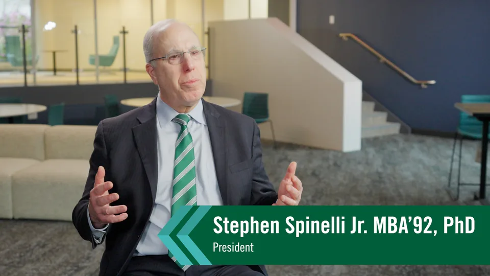
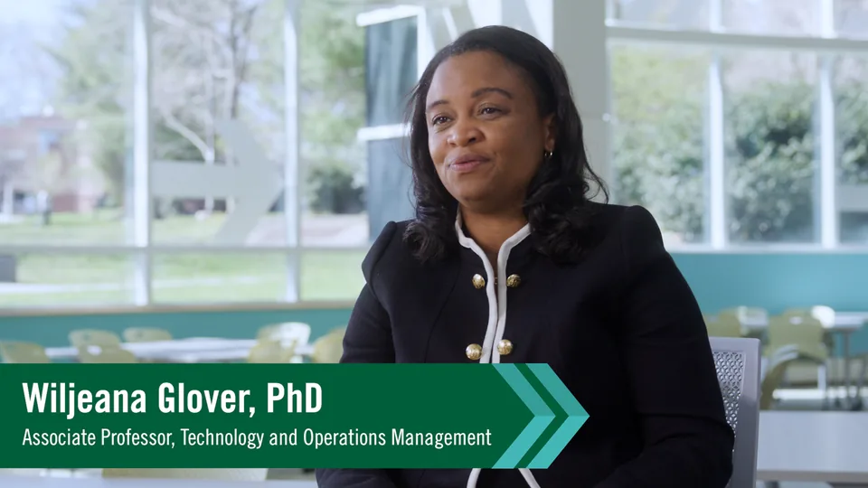
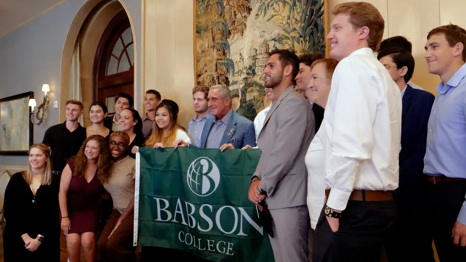
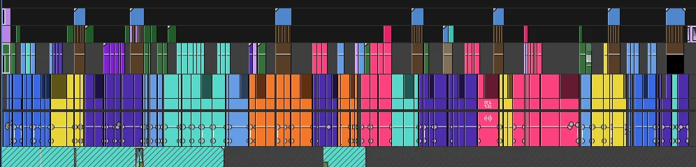

Technically a two-part project (one 60s pre-roll video for use at the Commencement ceremony itself before AMB's speech; and another, extended 4-5 minute post-cap video with more interview footage), this is the longer-form cut of a video for Babson College in which we explored the ways in which AMB's generous donations have helped to further the institution's initiatives in keeping with his six core values: giving back to others, putting people first, including everyone, innovating continuously, listening and responding, and leading by example.



